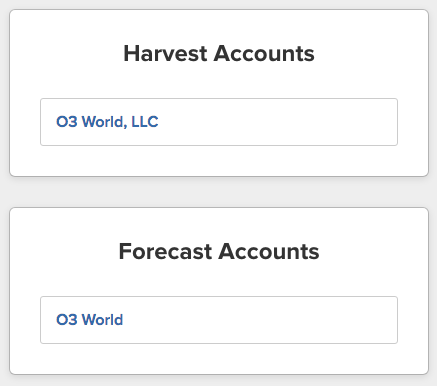

SAML 101
The case for SSO with SAML
Created by Greg Aiello (@gregoryilo)
Why implement SSO?
- For each service, one less username/password combo
- Enables centralized authentication & authorization policies
- Consolidates the security risks associated with having multiple authentication services
Example
Imagine you're Jamie

What is SAML?
- Security Assertion Markup Language
- XML-based, open-standard data format
- Used for authentication & authorization
Authentication vs. Authorization
- Authentication: Who you are
- Authorization: What you can do

IdPs & SPs
-
IdP (Identity Provider)
- Houses user credentials
- Issues tokens
-
SP = Service Provider
- Provides non-authentication related services
What's this token thing about?

What's this token thing about?
- IdP issues token to Greg that asserts that he is in fact Greg
-
Tokens can contain any identifying/user-specific data that a SP might need:
- Name: Greg Aiello
- Email: greg@o3world.com
- Groups: Staff, Developers
What's this token thing about?
- The IdP can send different data depending on which SP the user is attempting to access
- The SP will read the token and grant the user access to its service accordingly
Where does the user come into play?
- IdP-Initiated
- SP-Initiated
IdP-Initiated
- User visits IdP login page
- User authenticates
- IdP redirects user to SP with fresh token
SP-Initiated
- I click a link in an email to o3.salesforce.com (SP)
- o3.salesforce.com (SP) doesn't see a token, so it redirects me to login.o3world.com (IdP)
- login.o3world.com (IdP) prompts me to authenticate
- login.o3world.com (IdP) redirects me to o3.salesforce.com with SAML token
Realm Discovery
How does the SP and/or IdP know who I am and where I should be going?
- Use Subdomains (e.g. o3.salesforce.com)
- Email address (e.g. greg@o3world.com)
- It straight up asks me
Realm Discovery
Example from id.getharvest.com:
Questions/Comments